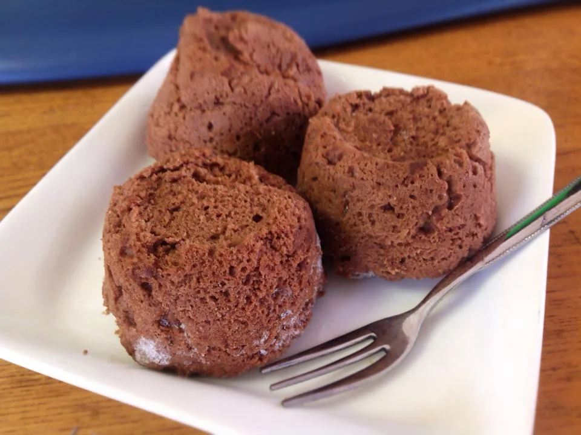
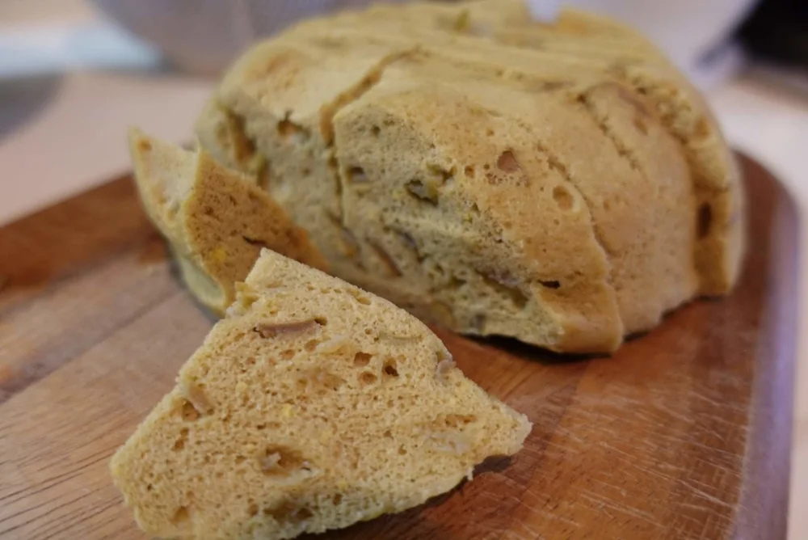
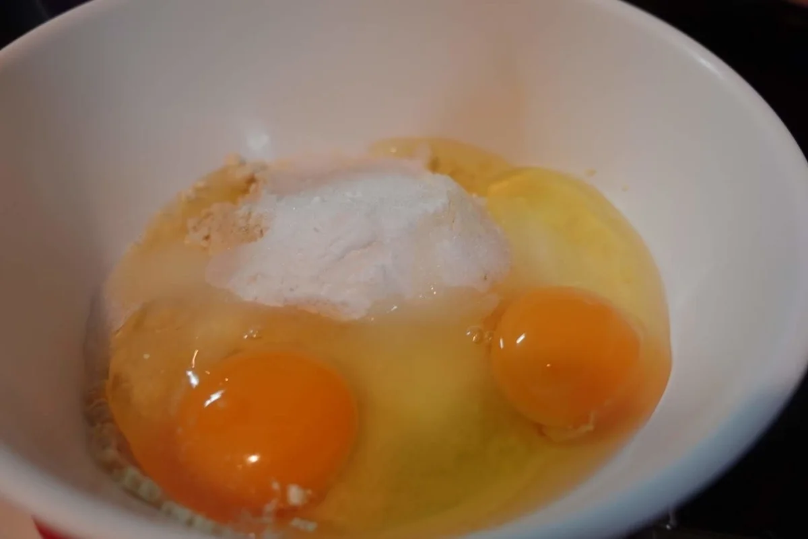

蒸しパン・パン
おからココア蒸しパン
ココアの香りの小さな蒸しパンです。12個分の配合を1個ずつ加熱するので、朝に食べる分を取り分けやすい形です。

豆乳の半量で混ぜる ボウルにおからパウダー、オオバコ、ベーキングパウダー、エリスリトール、卵を入れます。豆乳の半量を加えて混ぜます。
残りとコンポートを混ぜる 残りの豆乳を加えて混ぜ、りんご皮コンポートも全体に混ぜ合わせます。
容器で整える 電子レンジ対応の耐熱容器に入れ、表面を軽く整えます。
ふたをして加熱する 電子レンジ対応のふたを使い、600Wで10分加熱します。
取り出す 火が通っていることを確かめ、蒸気と容器の熱に気をつけてふたを外します。網などの上に取り出し、蒸気を逃がします。
切り分ける 食べやすい大きさに切り分けます。全量で3食分です。

加熱時間は作った時の目安です。容器や調理器具によって仕上がりは変わります。中心まで火が通っていることを確認してください。
豆乳りんご皮おから蒸しパンの材料・作り方（50kgdiet.com） →
このページは書籍の改訂原稿をもとに掲載しています。元記事は過去の記録のため、材料や表現が異なる場合があります。